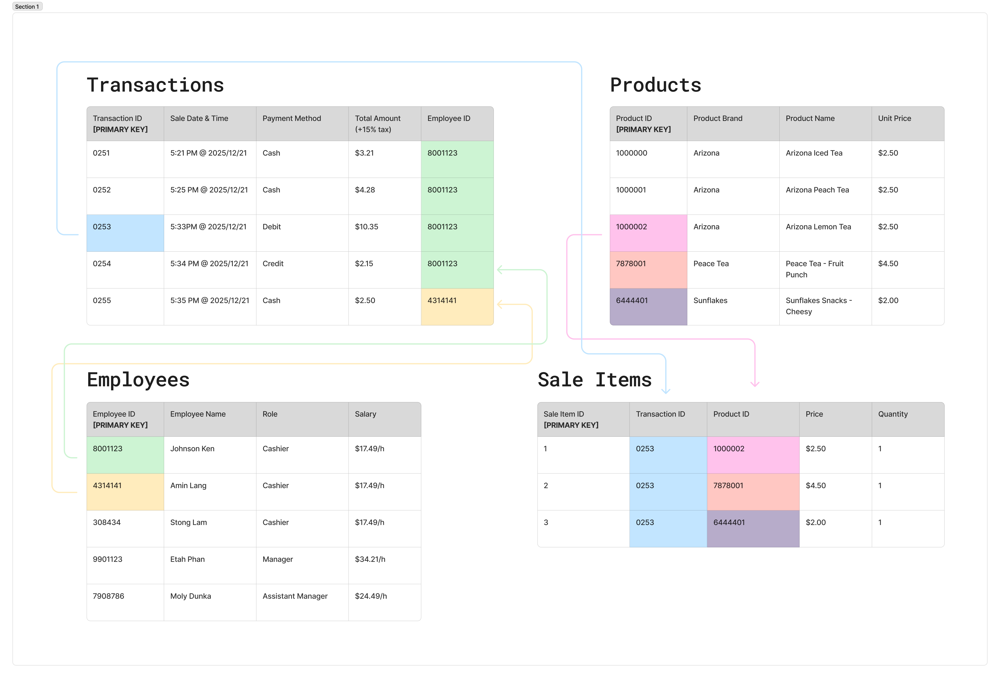

Module 9. Database Elements
A conceptual database diagram for my local convenience store, Frank's Smoke Shop.
THEA3135, Richard Lau
The kind of business I created a conceptual relational structure database for is a convenience store

By Richard Lau